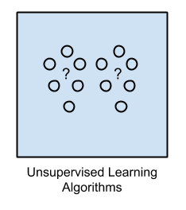

Types of learning
There are two general categories that ML algorithms usually fall into: supervised and unsupervised.
Supervised Learning
 Supervised learning relies on labeled data to train a model. For each piece of input data
Supervised learning relies on labeled data to train a model. For each piece of input data X in a training set, there exists a corresponding labeled output data y. For example, a picture of a truck will have the corresponding class label, "truck". This type of data is very easy to learn from, and for this reason, most traditional machine learning algorithms are supervised. You can think of supervised machine learning as analogous to training an animal. During training, the model is rewarded for correct predictions of y and punished for incorrect predictions of y. If you have labeled data, supervised learning is certainty the way to go. Common downfalls with supervised learning is that labeled data is often scarce. There is far more unlabeled data in the world than labeled data and labeling can often be cost- or time-prohibitive.
One common misconception newcomers often have about supervised learning is that it requires human supervision in some way. While this is often true, as in the case of using a dataset that has been hand-labeled, many supervised learning algorithms leverage data that is "self-labeled". Take for example a character-level language modeling task that attempts to predict the next letter in a sentence given the previous five letters. To predict the string hi there!, an input of hi th should output e, and i the, should output r, etc. We could train such a model on the entire 27 billion English characters in Wikipedia without the need for any human supervision. This remains a supervised learning task because each piece of input data has a corresponding output data that is labeled.
In situations where data is not self-labeling, labeling it can be expensive. It is for this reason that recent research initiatives have put more resources towards developing better unsupervised learning algorithms.
Unsupervised Learning
 Unsupervised learning algorithms learn from unlabeled data. This is particularly advantageous because unlabeled data is cheap and abundant. New developments in unsupervised learning have the potential to make some of the most radical advances for the ML field in the coming decades. Clustering algorithms like K-Means and t-SNE (link #2) both attempt to group unlabeled data into classes or spatial regions. These clustering methods are also useful for dimensionality reduction, the process of transforming a high dimensionality vector into a lower dimensionality while preserving as much information as possible. This transformation can be thought of as a form of lossy compression, and is often useful to reduce the number of input features in your training data before feeding it to your model.
Both of K-means and t-SNE are also useful to learn about your data. One common practice is to use one of these methods to reduce the dimensionality of your data's features to 2 or 3 dimensions so that it can be graphed. Doing so may lead you to discover important patterns in your data.
Next: Performance Measures
Previous: The Machine Learning Pipeline
Return to the main page.
All source code in this document is licensed under the GPL v3 or any later version.
All non-source code text is licensed under a CC-BY-SA 4.0 international license.
You are free to copy, remix, build upon, and distribute this work in any format for any purpose under those terms.